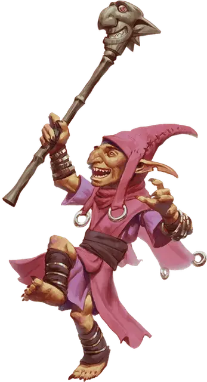

Нилбог
Nilbog
Маленький Гуманоид (Гоблиноид), хаотично-злой

Класс Доспеха 13 (кожаный доспех)
Хиты 7 (2к6)
Скорость 30 футов
| мод | спас | ||
|---|---|---|---|
| СИЛ | 8 | −1 | −1 |
| ЛОВ | 14 | +2 | +2 |
| ТЕЛ | 10 | +0 | +0 |
| мод | спас | ||
|---|---|---|---|
| ИНТ | 10 | +0 | +0 |
| МДР | 8 | −1 | −1 |
| ХАР | 15 | +2 | +2 |
Навыки Скрытность +6
Чувства тёмное зрение 60 футов, пассивное Восприятие 9
Языки Общий, Гоблинский
Опасность 1 (200 опыта)
Бонус мастерства +2
Среда обитания Лес, Подземье, Холмы
Особенности
Врождённое колдовство. Базовой характеристикой нилбога является Харизма (Сл спасброска от заклинаний 12). Он может накладывать следующие заклинания без использования материальных компонентов:
• Неограниченно: волшебная рука [mage hand], жуткий смех Таши [tasha’s hideous laughter], злая насмешка [vicious mockery].
• 1/день: смятение [confusion].
Нилбогизм. . Любое существо, которое пытается нанести урон нилбогу, должно сначала успешно пройти спасбросок Харизмы Сл 12 или стать очарованным до конца своего следующего хода. Очарованное таким образом существо должно использовать свое действие на восхваление нилбога.
Нилбог не может восстановить хиты, даже посредством магического лечения, кроме как своей реакцией Переворот Удачи.
Ловкий побег. Нилбог может в каждом своём ходу бонусным действием совершить действие Отход или Засада.
Действия
Скипетр шута. . Рукопашная атака оружием: +4 к попаданию, досягаемость 5 футов, одна цель. Попадание: 5 (1к6 + 2) дробящего урона.
Короткий лук. . Дальнобойная атака оружием: +4 к попаданию, дистанция 80/320 футов, одна цель. Попадание: 5 (1к6 + 2) колющего урона.
Реакции
Переворот удачи. . В ответ на нанесёние урона нилбогу другим существом, нилбог уменьшает урон до 0 и восстанавливает 1к6 хитов.
Описание
Когда Маглубийет подчинил себе богов гоблинов, он намеревался оставить в живых только Хургорбайага, как жестокого надзирателя, который держал бы гоблинов в строгом подчинении. Но в пантеоне гоблинов было и божество обманщик, которое желало посмеяться последним. Хотя его естество было разрушено Маглубийетом, бог обманщик выжил и в разделенной форме, как дух, который овладевает телами, когда гоблины образуют войско, внося беспорядок в их ряды если его не умиротворят. У гоблинов нет имени для этого божества и они не решаются дать ему какое–нибудь, дабы Маглубийет не использовал это имя, чтобы изловить и сокрушить его, как он сделал с остальными божествами. Они называют этот дух и гоблина, которым он завладел, нилбогом (слово «гоблин» произнесенное задом наперед), и наслаждаются страхом, который нилбог сеет в рядах багбиров и хобгоблинов в войске.
Месть Гоблинов. Когда гоблиноиды образуют армию, существует шанс того, что гоблин станет одержим нилбогом, особенно если с гоблином плохо обращаются вышестоящие. Эта одержимость превращает гоблина в шаловливое, бесноватое существо, не боящееся расправы. Она даёт гоблину странные способности, которые заставляют других делать противоположное тому, что они первоначально намеревались делать. Нападение на гоблина, одержимого нилбогом, безрассудно, а убийство существа всего лишь приведет к тому, что дух незамедлительно вселится в другого гоблина. Единственный способ не дать нилбогу сеять хаос – это хорошо с ним обращаться и выказывать уважение и похвалы.
Совсем Не Шутки. Возможное присутствие нилбога в армии послужило поводом для того, чтобы среди гоблиноидов в каждой армии был хотя бы один гоблин шут. Шуту позволено ходить где вздумается и делать что угодно. Должность шута очень востребована среди гоблинов, потому что даже если он и не нилбог, хобгоблины и багбиры потворствуют его маниакальному поведению.
Нилбогизм
Нилбог – это невидимый дух, который вселяется только в гоблинов. Лишенный тела он может летать со скоростью 30 футов и не может разговаривать и его нельзя атаковать. Единственное действие, которое он может совершить – это овладеть гоблином в 5 футах от себя.
Гоблин, выбранный целью духом, должен успешно пройти спасбросок Харизмы Сл 15 или стать одержимым. Будучи одержимым духом, мировоззрение гоблина становится хаотически–злым, его Харизма становится 15 (если только она не была выше), он получает черты Врождённое Колдовство и Нилбогизм, а так же реакцию Переворот Удачи. Если спасбросок удачен, то дух не может овладеть гоблином ближайшие 24 часа. Если тело убито или одержимость прервана заклинанием, таким как рассеивание зла и добра [dispel evil and good], магический круг [magic circle], или защита от зла и добра [protection from evil and good], то дух ищет другого гоблина, чтобы овладеть им.
Дух может покинуть тело в любое время, но не будет делать этого по своей воле, если только поблизости нет другого потенциального тела. Гоблин, избавленный от духа нилбога, возвращается к своим обычным характеристикам и теряет все черты, которые получил во время одержимости.